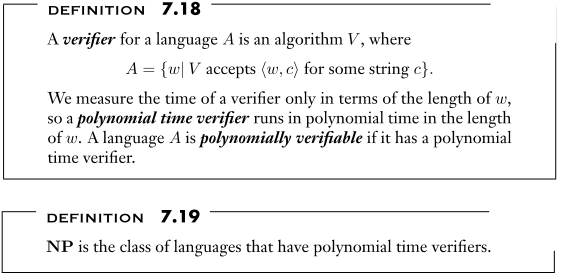
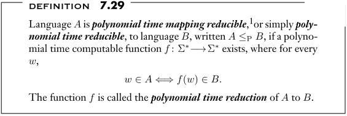

This uses a full example NP-completness proof, which you should review before we break it down below.
A natural way to start writing a proof of some property X is to go to the definition of X to see what is required. However, very few NP-completeness proofs directly use the definition of NP-completeness. Instead, they use a theorem that gives sufficient conditions for proving NP-completeness. In our Theory of Computation class, this is Theorem 7.36 in the textbook:
Some students incorrectly refer to this as the “definition” of NP-completeness — it does give some conditions that are similar to the definition (Definition 7.34 in the textbook). However, notice that the theorem uses a problem that is NP-complete (problem \(B\)) to establish that another problem (problem \(C\)) is NP-complete. As a definition this would be nonsense – it would be a circular definition that used NP-completeness to define NP-completeness. The definition of NP-completeness had to be used initially to prove that the first problem(s) were NP-complete, and this is why the Cook-Levin Theorem (Theorem 7.37 in the textbook) is so important. Once we have established some problems as NP-complete using the definition, we have now bootstrapped our ability to use Theorem 7.36 to prove additional problems are NP-complete. The bottom line of this paragraph: In precise writing, like a mathematical proof, wording is important, and so make sure you don’t refer to the conditions in the theorem above as the “definition” of NP-completeness.
Let’s break down the theorem to see how we can apply it. Our goal is to prove that problem \(C\) is NP-complete (the conclusion of the statement in the theorem). To make the predicate of the theorem true, we need to establish two things:
\(C\) is in \(NP\), and
For some known NP-complete problem \(B\), \(B\leq_P C\).
These two things will be two distinct and independent parts of the NP-completeness proof for \(C\). Let’s look at the one at a time, along with our example proof. In our example, the \(C\) from the theorem (the problem we want to prove is NP-complete) is the \(\textit{PARTITION}\) problem, and the \(B\) from the theorem (the problem we already know is NP-complete) is \(\textit{SUBSET-SUM}\).
To prove that \(C\) is in \(NP\) we use the definition of \(NP\), which in turn depends on the definition of a verifier. Here are the relevant definitions from our textbook:

Definition 7.19 tells us that for \(C\) to be in \(NP\), it must have a polynomial time verifier. Definition 7.18 tells us what a polynomial time verifier is: Every string \(w\) in our language has a certificate (or a “proof” or a “witness”) that can be verified by a polynomial time algorithm. For our example proof, we showed \(\textit{PARTITION}\in NP\) in the first paragraph:
We first show that \(\textit{PARTITION}\in NP\) by defining the certificate and a verifier for the language. In particular, the certificate for input \(\mathbf{a}\) is just the set of indices \(L\) for the left side of an equal-weight partition. The verifier \(V\) is given input \(\langle\mathbf{a},L\rangle\), and first checks that \(L\) this is a subset of \(\{1,2,...,n\}\), where \(n\) is the number of items in \(\textbf{a}\). \(V\) then goes through the items in \(\mathbf{a}\) and adds each item to a running sum for either the left or right side, depending on whether that index is in \(L\). The verifier accepts if these sums are equal after going through all of \(\mathbf{a}\). The verifier clearly runs in polynomial time, and a certificate exists which will be verified if and only if \(\langle\mathbf{a}\rangle\in \textit{PARTITION}.\) Therefore \(\textit{PARTITION}\in NP\).
The important parts from the example: The proof introduces what the paragraph is about (“We first show…”). By Definition 7.18, strings are in the language if and only if they have the certificate string \(c\) where \(V\) accepts input \(\langle w,c\rangle\), so we need to define the certificate and what the verifier does to verify it. We need to justify that the algorithm runs in polynomial time and that the certificate is verified if and only if the input is in the language. In most cases, the verifier only does simple things, so you don’t have to do anything to justify that it runs in polynomial time – you do need to state it, however, since it’s required by the definition that this be a polynomial time verifier.
Recall the second required part in our NP-completeness proof:
So we need a known NP-complete problem that’s related to the problem we are looking at, and in our example proof that is the \(\textit{SUBSET-SUM}\) problem. We’ll talk more about how to identify an appropriate problem to use later, but we’ve picked a problem in our example proof and so we need to prove that \(\textit{SUBSET-SUM}\leq_{P} \textit{PARTITION}\). What does this mean? Let’s go back to the definition:

To apply this definition, we need to define the function \(f\), justify that it is computable in polynomial time, and justify that the main correctness condition \[ w\in A\ \ \Longleftrightarrow\ \ f(w)\in B\] holds. We’ll do this in three distinct pieces: first we’ll define the function \(f\) and justify that it is computable in polynomial time; second, we’ll prove that \(w\in A\ \Longrightarrow\ f(w)\in B\); and third, we’ll prove that \(f(w)\in B\ \Longrightarrow\ w\in A\).
Since we need to show \(\textit{SUBSET-SUM}\leq_{P} \textit{PARTITION}\) (from the requirement for proving NP-completeness), mapping this into the definition we have \(A\) (in the definition) being \(\textit{SUBSET-SUM}\) and \(B\) being \(\textit{PARTITION}\). For this reduction, we need a function \(f\) where the domain (where the input \(w\) in the definition comes from) can be considered instances of problem \(A\), and the range (i.e., \(f(w)\)) are instances of problem \(B\). Back to our specific problem, \(f\) must take an input to the \(\textit{SUBSET-SUM}\) problem and compute from that an input to the \(\textit{PARTITION}\) problem. So \(f\)’s input is of the form \(\langle S,t\rangle\) and produces an output of the form \(\textbf{a}\).
The second paragraph of our example proof does exactly this:
Next, we show that \(\textit{SUBSET-SUM}\leq_{P} \textit{PARTITION}\), where \(\textit{SUBSET-SUM}\) is defined on page 296 of the textbook. We first define the reduction function: Given an input \(\langle S,t\rangle\) for \(\textit{SUBSET-SUM}\), the reduction function calculates \(w=\sum_{x\in S} x\), the total weight of all elements in the set \(S\). Next, we define \(t'=\max(t,w-t)\), which ensures that \(t'\geq w/2\). Note that \(w-t\) is the weight of items excluded from any subset of weight \(t\), so \(\langle s,t'\rangle\in\textit{SUBSET-SUM}\) if and only if \(\langle s,t\rangle\in\textit{SUBSET-SUM}\). Finally, create sequence \(\mathbf{a}\) by listing out the items in \(S\) along with a final new item with value \(b=2t'-w\). This sequence \(\mathbf{a}\) is the output of the reduction, designed to be an input to the \(\textit{PARTITION}\) problem. Note that the weight of all elements in \(\mathbf{a}\) is \(w+b=w+(2t'-w)=2t'\). These are all simple computations, so the reduction can be computed in polynomial time. We next show that this is a valid reduction.
Notice that all the pieces are here: input is \(\langle S,t\rangle\), we have a well-defined function we can compute to give us an \(\mathbf{a}\), and we wrap it up by noting that the function is polynomial time. Other than the correctness condition, that’s all we need for this part!
Again, with our example problem, this means proving that \(\langle S,t\rangle\in\textit{SUBSET-SUM}\Longrightarrow\mathbf{a}\in\textit{PARTITION}\). Since the only case that matters for this logical statement is when \(\langle S,t\rangle\in\textit{SUBSET-SUM}\), we start the third paragraph with a clear statement that this is the case we’re considering. Here’s the third paragraph of the proof:
Consider an input \(\langle S,t\rangle\in\textit{SUBSET-SUM}\), so \(S\) contains a subset of weight \(t\) and also of \(t'\) (it might be the same subset). Let \(T\) be a subset of weight \(t'\), and put the indices (in \(\mathbf{a}\)) of these values from \(T\) into set \(L\) so that \(\sum_{i\in L} a_i=t'\). Since the total weight of all items in \(\mathbf{a}\) is \(2t'\), the elements on the left are exactly half of the total weight, and so \(\langle\mathbf{a}\rangle\in \textit{PARTITION}\).
So starting with an input \(\langle S,t\rangle\in\textit{SUBSET-SUM}\) we derive the conclusion that \(\mathbf{a}\in\textit{PARTITION}\). In other words, in the terms of the definition, we have shown that \(w\in A\ \Longrightarrow\ f(w)\in B\).
This is like the previous part, but in the other direction. We start by considering just the case that results in \(f(w)\in B\). Here’s that part:
Next consider an input that results in \(\langle\mathbf{a}\rangle\in \textit{PARTITION}\). Since the sum of all elements in \(\mathbf{a}\) is \(2t'\), this means we can divide the elements into a “left side” and “right side” so that the sum of each side is \(t'\). We arrange the sides so that the new weight \(b\) element from the reduction is on the right side. Therefore, the left side consists of items from \(S\) that add up to \(t'\). As noted above, such a set exists if and only if there is a subset of \(S\) that adds up to \(t\), so \(\langle S,t\rangle\in\textit{SUBSET-SUM}\).
So starting with the assumption that our function \(f\) produced an \(\mathbf{a}\in\textit{PARTITION}\), we reach the conclusion that \(\langle S,t\rangle\in\textit{SUBSET-SUM}\). In other words, in the terms of the definition, we have shown that \(f(w)\in B\ \Longrightarrow\ w\in A\).
At this point we’ve written a lot in our proof — four paragraphs, each with a specific purpose. It’s easy for a reader to lose track of the original point, so it’s good to recap everything. The final paragraph in our proof does this, summarizing what we’ve shown and referencing key theorems that we relied on:
The three paragraphs above, taken together, show that the reduction we defined above is a valid polynomial time reduction from \(\textit{SUBSET-SUM}\) to \(\textit{PARTITION}\), so \(\textit{SUBSET-SUM}\leq_{P} \textit{PARTITION}\). Since we also showed that \(\textit{PARTITION}\in NP\), and we know that \(\textit{SUBSET-SUM}\) is NP-complete by Theorem 7.56, it follows from Theorem 7.36 that \(\textit{PARTITION}\) is NP-complete. QED
The description above walks through the example proof in the context of definitions, theorem, and specific things that we need to prove. There’s a reason why every single statement in the proof is there, and you should be able to identify the logical purpose of each statement.
Next I’ll walk through how an NP-completeness proof can be “graded” – this is roughly what I look for when grading a student-written proof on an assignment or an exam. If you check these things before you submit your work, then as long as these pieces are there (and you correctly justified/proved them) then you’ll get a decent grade!